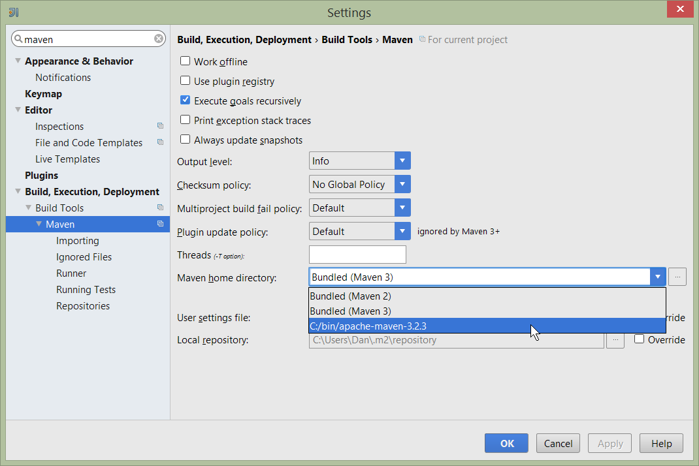

This guide describes how to build an Isis applications either from the command line (as per your continuous integration server or within an IDE.
Developing from the Command Line
| TODO |
Setting up IntelliJ IDEA
This appendix describes how to install and setup IntelliJ, then how to import an application into IntelliJ and run it.
|
This document relates to IntelliJ Community Edition 14.1.1, with screenshots taken for Windows. |
Installing and Setting up
This section covers installation and setup.
Download and Install
Download latest version of IntelliJ Community Edition, and install:
Start the wizard, click through the welcome page:
Figure 1. IntelliJ Installation Wizard - Welcome page
Choose the location to install the IDE:

Figure 2. IntelliJ Installation Wizard - Choose Location
Adjust any installation options as you prefer:

Figure 3. IntelliJ Installation Wizard - Installation Options
and the start menu:

Figure 4. IntelliJ Installation Wizard - Start Menu Folder
and finish up the wizard:

Figure 5. IntelliJ Installation Wizard - Completing the Wizard
Later on we’ll specify the Apache Isis/ASF code style settings, so for now select I do not want to import settings:

Figure 6. IntelliJ Installation Wizard - Import Settings
Finally, if you are young and trendy, set the UI theme to Darcula:

Figure 7. IntelliJ Installation Wizard Set UI Theme
New Project
In IntelliJ a project can contain multiple modules; these need not be physically located together. (If you are previously an Eclipse user, you can think of it as similar to an Eclipse workspace).
Start off by creating a new project:

Figure 8. IntelliJ Create New Project
We want to create a new Java project:

Figure 9. IntelliJ Create New Project - Create a Java project
We therefore need to specify the JDK.
| at the time of writing Isis supports only Java 7; Java 8 is scheduled for support in Isis v1.9.0 |

Figure 10. IntelliJ Create New Java Project - Select the JDK
Specify the directory containing the JDK:

Figure 11. IntelliJ Create New Project - Select the JDK location
Finally allow IntelliJ to create the directory for the new project:

Figure 12. IntelliJ Create New Project
Import Settings
Next we need to configure IntelliJ with ASF/Apache Isis' standard templates and coding conventions. These are bundled as the settings.jar JAR file download from the Isis website).
Import using: File > Import Settings, and specify the directory that you have downloaded the file to:

Figure 13. IntelliJ Import Settings - Specify JAR file
Select all the (two) categories of settings available in the JAR file:

Figure 14. IntelliJ Import Settings - Select all categories
And then restart:

Figure 15. IntelliJ Import Settings - Restart
Other Settings
There are also some other miscellaneous settings that we recommend that you adjust (though these are not critical).
First, specify an up-to-date Maven installation, using File > Settings (or IntelliJ > Preferences if on MacOS):

Figure 16. IntelliJ Other Settings - Maven Installation
Still on the Maven settings page, configure as follows:

Figure 17. IntelliJ Other Settings - Maven Configuration
On the compiler settings page, ensure that build automatically is enabled (and optionally compile independent modules in parallel):

Figure 18. IntelliJ Other Settings - Compiler Settings
On the auto import page, check the optimize imports on the fly and add unambiguous imports on the fly

Figure 19. IntelliJ Other Settings - Auto Import
Plugins
You might also want to set up some additional plugins, using File > Settings > Plugins (or equivalently File > Other Settings > Configure Plugins).
Recommended are: * Maven Helper plugin
+ Provides better visualization of dependency trees (similar to Eclipse) * AsciiDoctor plugin
+ Useful if you are doing any authoring of documents.
Some others you might like to explore are:

Figure 20. IntelliJ Plugins
Importing and Managing Maven Modules
Let’s load in some actual code! We do this by importing the Maven modules.
First up, open up the Maven tool window (View > Tool Windows > Maven Projects). You can then use the 'plus' button to add Maven modules. In the screenshot you can see we’ve loaded in Isis core; the modules are listed in the Maven Projects window and corresponding (IntelliJ) modules are shown in the Projects window:

Figure 21. IntelliJ Maven Module Management - Importing Maven modules
We can then import another module (from some other directory). For example, here we are importing the Isis Addons' todoapp example:

Figure 22. IntelliJ Maven Module Management - Importing another Module
You should then see the new Maven module loaded in the Projects window and also the Maven Projects window:

Figure 23. IntelliJ Maven Module Management -
If any dependencies are already loaded in the project, then IntelliJ will automatically update the CLASSPATH to resolve to locally held modules (rather from .m2/repository folder). So, for example (assuming that the <version> is correct, of course), the Isis todoapp will have local dependencies on the Isis core.
You can press F4 (or use File > Project Structure) to see the resolved classpath for any of the modules loaded into the project.
If you want to focus on one set of code (eg the Isis todoapp but not Isis core) then you could remove the module; but better is to ignore those modules. This will remove from the the Projects window but keep them available in the Maven Projects window for when you next want to work on them:

Figure 24. IntelliJ Maven Module Management - Ignoring Modules
Confirm that it’s ok to ignore these modules:

Figure 25. IntelliJ Maven Module Management - Ignoring Modules (ctd)
All being well you should see that the Projects window now only contains the code you are working on. Its classpath dependencies will be adjusted (eg to resolve to Isis core from .m2/repository):

Figure 26. IntelliJ Maven Module Management - Updated Projects Window
Running
Let’s see how to run both the app and the tests.
Running the App
Once you’ve imported your Isis application, we should run it. We do this by creating a Run configuration, using Run > Edit Configurations.
Set up the details as follows:

Figure 27. IntelliJ Running the App - Run Configuration
We specify the Main class to be org.apache.isis.WebServer; this is a wrapper around Jetty. It’s possible to pass program arguments to this (eg to automatically install fixtures), but for now leave this blank.
Also note that Use classpath of module is the webapp module for your app, and that the working directory is $MODULE_DIR$.
Next, and most importantly, configure the DataNucleus enhancer to run for your dom goal. This can be done by defining a Maven goal to run before the app:

Figure 28. IntelliJ Running the App - Datanucleus Enhancer Goal
The -o flag in the goal means run off-line; this will run faster.
| if you forget to set up the enhancer goal, or don’t run it on the correct (dom) module, then you will get all sorts of errors when you startup. These usually manifest themselves as class cast exception in DataNucleus. |
You should now be able to run the app using Run > Run Configuration. The same configuration can also be used to debug the app if you so need.
Running the Unit Tests
The easiest way to run the unit tests is just to right click on the dom module in the Project Window, and choose run unit tests. Hopefully your tests will pass (!).

Figure 29. IntelliJ Running the App - Unit Tests Run Configuration
As a side-effect, this will create a run configuration, very similar to the one we manually created for the main app:

Figure 30. IntelliJ Running the App - Unit Tests Run Configuration
Thereafter, you should run units by selecting this configuration (if you use the right click approach you’ll end up with lots of run configurations, all similar).
Running the Integration Tests
Integration tests can be run in the same way as unit tests, however the dom module must also have been enhanced.
One approach is to initially run the tests use the right click on the integtests module; the tests will fail because the code won’t have been enhanced, but we can then go and update the run configuration to run the datanucleus enhancer goal (same as when running the application):

Figure 31. IntelliJ Running the App - Integration Tests Run Configuration
Hints and Tips
Keyboard Shortcuts Cheat Sheets
You can download 1-page PDFs cheat sheets for IntelliJ’s keyboard shortcuts: * for Windows * for MacOS:https://www.jetbrains.com/idea/docs/IntelliJIDEA_ReferenceCard_Mac.pdf[MacOS]
Probably the most important shortcut on them is for Find Action:
- ctrl-shift-A on Windows
- cmd-shift-A on MacOS.
This will let you search for any action just by typing its name.
Switching between Tool Windows and Editors
The Tool Windows are the views around the editor (to left, bottom and right). It’s possible to move these around to your preferred locations.
-
Use
alt-1throughalt-9(orcmd-1throughalt-9) to select the tool windows-
Press it twice and the tool window will hide itself; so can use to toggle
-
-
If in the Project Window (say) and hit enter on a file, then it will be shown in the editor, but (conveniently) the focus remains in the tool window. To switch to the editor, just press
Esc.-
If in the Terminal Window, you’ll need to press
Shift-Esc.
-
-
If on the editor and want to locate the file in (say) the Project Window, use
alt-F1. -
To change the size of any tool window, use
ctrl-shift-arrow
Using these shortcuts you can easily toggle between the tool windows and the editor, without using the mouse. Peachy!
Navigating Around
For all of the following, you don’t need to type every letter, typing "ab" will actually search for ".a.*b.".
-
to open classes or files or methods that you know the name of:
-
ctrl-Nto open class -
ctrl-shift-Nto open a file -
(bit fiddly this)
ctrl-shift-alt-Nto search for any symbol.
-
-
open up dialog of recent files:
ctrl-E -
search for any file:
shift-shift
Navigating around:
* find callers of a method (the call hierarchy): ctrl-alt-H
* find subclasses or overrides: ctrl-alt-B
* find superclasses/interface/declaration: ctrl-B
Viewing the structure (ie outline) of a class
* ctrl-F12 will pop-up a dialog showing all members
** hit ctrl-F12 again to also see inherited members
Editing
-
Extend selection using
ctrl-W-
and contract it down again using
ctrl-shift-W
-
-
to duplicate a line, it’s
ctrl-D-
if you have some text selected (or even some lines), it’ll actually duplicate the entire selection
-
-
to delete a line, it’s
ctrl-X -
to move a line up or down:
shift-alt-upandshift-alt-down-
if you have selected several lines, it’ll move them all togethe
-
-
ctrl-shift-Jcan be handy for joining lines together-
just hit enter to split them apart (even in string quotes; IntelliJ will "do the right thing")
-
Intentions and Code Completion
Massively useful is the "Intentions" popup; IntelliJ tries to guess what you might want to do. You can activate this using`alt-enter`, whenever you see a lightbulb/tooltip in the margin of the current line.
Code completion usually happens whenever you type '.'. You can also use ctrl-space to bring these up.
In certain circumstances (eg in methods0) you can also type ctrl-shift-space to get a smart list of methods etc that you might want to call. Can be useful.
Last, when invoking a method, use ctrl-P to see the parameter types.
Refactoring
Loads of good stuff on the Refactor menu; most used are:
-
Rename (
shift-F6) -
Extract
-
method:
ctrl-alt-M -
variable:
ctrl-alt-V
-
-
Inline method/variable:
ctrl-alt-N -
Change signature
If you can’t remember all those shortcuts, just use ctrl-shift-alt-T (might want to rebind that to something else!) and get a context-sensitive list of refactorings available for the currently selected object
Troubleshooting
When a Maven module is imported, IntelliJ generates its own project files (suffix .ipr), and the application is actually built from that.
Occasionally these don’t keep in sync (even if auto-import of Maven modules has been enabled).
To fix the issue, try: * reimport module * rebuild selected modules/entire project * remove and then re-add the project * restart, invalidating caches * hit StackOverflow (!)
One thing worth knowing; IntelliJ actively scans the filesystem all the time. It’s therefore (almost always) fine to build the app from the Maven command line; IntelliJ will detect the changes and keep in sync. If you want to force that, use File > Synchronize, ctrl-alt-Y.
Advanced
In this section are a couple of options that will reduce the length of the change code/build/deploy/review feedback loop.
Setting up Dynamic Reloading
| TODO - see IntelliJ blog. |
Setting up JRebel
| TODO |
Setting up Eclipse
We highly recommend that you develop your Isis application using an IDE. Isis is built with Maven, and all modern IDEs can import Maven projects.
If you are an Eclipse user, then we recommend you download the "Eclipse JEE package" configuration.
When running an Isis application, it’s necessary to setup the development environment so that the Java bytecode can be enhanced by the DataNucleus enhancer. If working in Eclipse, then JDO enhancement is most easily done by installing the DataNucleus' Eclipse plugin. This hooks the bytecode enhancement of your domain objects into Eclipse’s normal incremental compilation.
This plugin needs to be configured for each of your domain modules (usually just one in any given app). The steps are therefore:
-
import the project into Eclipse
-
configure the DataNucleus enhancer
-
run the app from the
.launchfile
Screencast
The following screencast shows how to import an Apache Isis maven-based application into Eclipse and configure to use with the JDO Objectstore
Importing the Project
Use File > Import, then Maven > Existing Maven Projects.
Add DataNucleus support
|
Make sure you are in the 'Java' Perspective, not the 'Java EE' Perspective. |
In Eclipse, for the domain object model project, first add DataNucleus support:

Then turn on Auto-Enhancement:

Update the classpath
DataNucleus' enhancer uses the domain object model’s own classpath to reference DataNucleus JARs. So, even though your domain objects are unlikely to depend on DataNucleus, these references must still be present.
See the earlier section on DataNucleus enhancer for details of the contents of the pom.xml. Chances are it is already set up from running the SimpleApp archetype.
Then, tell DataNucleus to use the project classpath:

When the enhancer runs, it will print out to the console:

Workaround for path limits (the DN plugin to use the persistence.xml)
If running on Windows then the DataNucleus plugin is very likely to hit the Windows path limit.
To fix this, we configure the enhancer to read from the persistence.xml file.
As a prerequisite, first make sure that your domain object model has a persistence.xml file. Then specify the persistence-unit in the project properties:

Workaround: If the enhancer fails
On occasion it appears that Eclipse can attempt to run two instances of the DataNucleus enhancer. This is probably due to multiple Eclipse builders being defined; we’ve noticed multiple entries in the Eclipse’s Debug view:

At any rate, you’ll know you’ve encountered this error if you see the following in the console:

The best solution is to remove DataNucleus support and then to re-add it:

If you consistently hit problems, then the final recourse is to disable the automatic enhancement and to remember to manually enhance your domain object model before each run.
Not ideal, we know. Please feel free to contribute a better solution :-)
Running the App
The simpleapp archetype automatically provides a .launch configurations in the webapp module. You can therefore very simply run the application by right-clicking on one of these files, and choosing "Run As" or "Debug As".
|
The screencast above shows this in action. |
Other domain projects.
There is nothing to prevent you having multiple domain projects. You might want to do such that each domain project corresponds to a DDD module, thus guaranteeing that there are no cyclic dependencies between your modules.
If you do this, make sure that each project has its own persistence.xml file.
And, remember also to configure Eclipse’s DataNucleus plugin for these other domain projects.